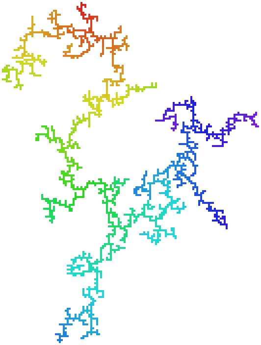
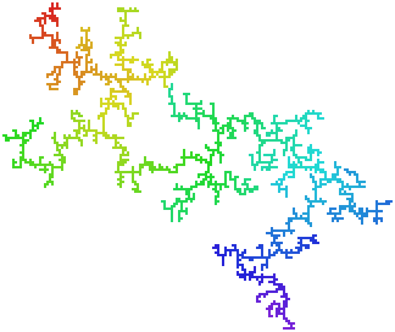
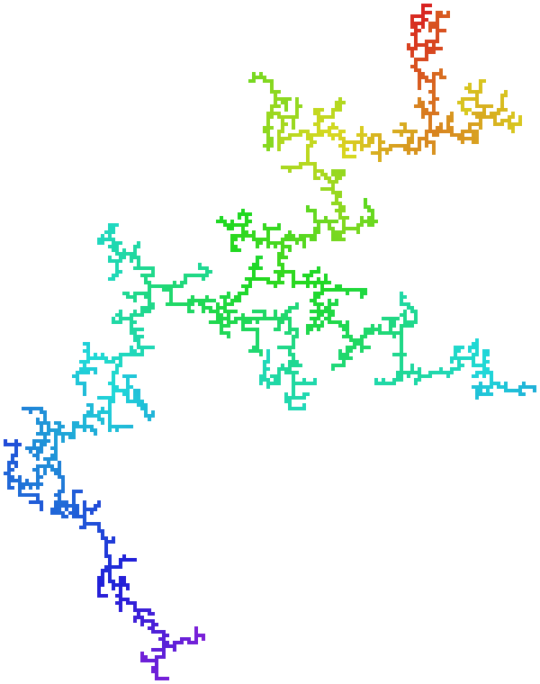
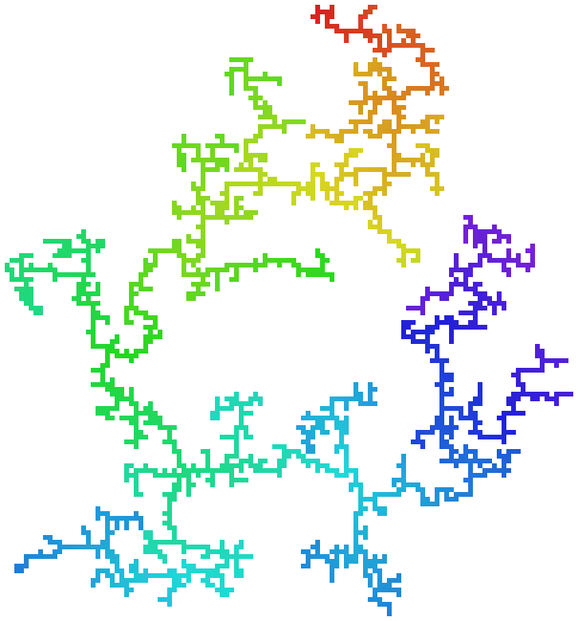

Uniform random polyominoes
Each image is a single polyomino drawn uniformly at random among all fixed polyominoes of its size, sampled by a provably-uniform Markov chain (relocate a random non-cut cell to a uniform perimeter site; the kernel is symmetric, so the uniform distribution is stationary). Uniform polyominoes sit in the branched-polymer universality class: sparse dendrites with Rg ~ nν, ν ≈ 0.64 — nothing like compact blobs. Cells are colored by graph distance from an extremal cell to show the branch structure.
Sampler, validation suite (exact-count cross-checks, chi-square uniformity against OEIS A001168, two-seed convergence, autocorrelation) and reproduction instructions: AdamScherlis/manyomino. A size appears here only after two independently-seeded chains agree on ⟨Rg²⟩ and every shown snapshot is ≥5τ into its chain.
n = 2,000two-seed converged
independent chains from a 1×2000 bar and a √n×√n rectangle agree: |z| = 0.12 on ⟨Rg²⟩




n = 1,000two-seed converged
independent chains from a 1×1000 bar and a √n×√n rectangle agree: |z| = 0.06 on ⟨Rg²⟩


Still equilibratingrunning
- n = 3,000 — two-seed |z| = 4.5, ESS = 5/19